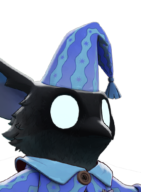

REM

An accidental stowaway from the world of dreams, Rem has found himself stranded in the city that never sleeps. Driven by his curious nature, Rem and his helpful friends have been seen wandering across the five boroughs in search of a way back home. So if you ever find yourself dozing off while taking the Blue line home from work, maybe you've just had an encounter with one of the Cursed Apple's newest denizens.